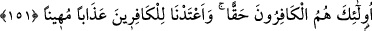
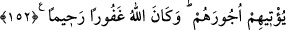
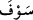

tamamına inanmak ve onların tebliğ ettiklerini tafsîlî ve icmâlî olarak kabul etmekle
mümkün olur. Bunlardan bâzısını inkar eden hepsini inkar eden gibidir. Nitekim Allah
Teâlâ: “Haktan sonra, sapıklıktan başka ne var?” (Yûnus, 10/32) buyurmuştur.
151- İşte gerçekten kâfirler bunlardır. Biz kâfirlere alçaltıcı bir azap
hazırlamışızdır.
“İşte gerçekten” yukarıda zikredilen çirkin sıfatları taşıyan “kâfirler bunlardır.”
Bunda şüphe yoktur. Onların inandık demelerine itibar edilmez. Kendilerince
bahsettikleri inanca “îman” denilmez.
“Biz kâfirlere alçaltıcı bir azap hazırlamışızdır.” Hakîr ve zelîl olarak oraya
girdiklerinde o azabı tadacaklardır. Allah Teâlâ, kâfirlerin âkıbetini haber verdikten
sonra mü’minlere olan va’dini şöyle beyân buyuruyor:
152- Allah’a ve peygamberlerine îman eden ve onlardan hiç birini diğerlerinden
ayırmayanlara (gelince) işte Allah onlara elbette mükâfatlarını verecektir. Allah
çok bağışlayıcı ve esirgeyicidir.
“Allah’a ve peygamberlerine îman eden ve” kâfirlerin yaptığı gibi bâzılarına inanıp
diğerlerini inkar ederek “onlardan hiç birini diğerinden ayırmayanlara gelince, işte
Allah onlara” yukarıda zikredilen yüce sıfatları taşıyan mü’minlere “elbette” vadettiği
“mükâfâtlarını verecektir.” Ecirden maksat sevaptır. Buna ecir denilmesi çalışarak
herhangi bir şeyi kazananın hak ettiği ücreti alması gibi olduğu içindir. Âyetteki “
”
kelimesi va’di, yâni ecrin verileceği va’dini tekid içindir. Gecikse bile mutlaka
gerçekleşeceğine delalet eder. “Allah,” kullarının hatâlarını “çok bağışlayıcı” ve
iyiliklerinin sevabını kat kat vermekle ziyâdesiyle merhamet edendir, “esirgeyicidir.”
150. âyet, îmanın kişinin kendi iddiâsı ve kendini mü’min saymasıyla hâsıl
olmayacağına delâlet etmektedir. Îmanın kendi şartları ve netîceleri kişide görülünce
îman hâsıl olur. Ondan sonraki (151 ve 152.) âyetlerde işâret edildiği üzere
peygamberler arasında ayrım yapmamak, îmanın netîcelerindendir. Allah’ın kabûlü ve
bu îman sebebiyle kulu mükâfâtlandırması da îmanın netîcelerindendir.
Allah’ın ruhlar üzerine saçtığı nur kime isâbet etmemişse o, hakîkî küfür içindedir.
Nitekim Cenab-ı Hak âyette onların “gerçekten kâfir” olduklarını belirtmiştir. İlâhî nûr
kime isâbet etmişse o da, “hakiki îman” sahibidir. İlkine arada îman etmesi fayda